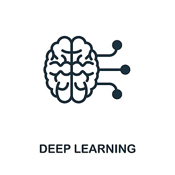
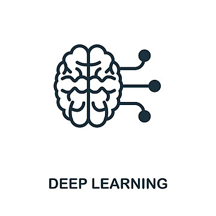
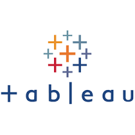
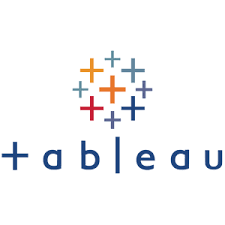

 



Predictive Maintenance for Industrial Machinery
Developed a predictive maintenance system for industrial machinery using machine learning models (Random Forest), real-time IoT sensor data, SQL for data warehousing, and Tableau for visualizing failure predictions and maintenance schedules.